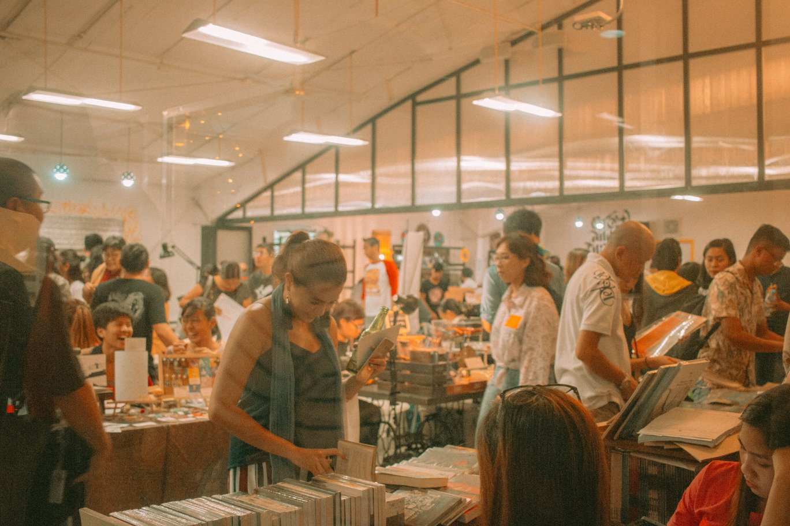

Programs
With a vision to bring a library in every creative community in the Philippines, Kwago continuously works with equally passionate individuals and organizations to create programs to nurture a deep love for reading and keep print alive.
Komura;
Co-designed with Warehouse Eight, Komura; is an independent initiative that aims to explore creative ways to make and experience literature. Since its launched in November 2018, it has evolved from being just a book fair and has spawned new programs that seek to provide holistic support for the readers and storytellers community: Komura; Studio (talks and workshop), Pixel (tech-based narrative and media), Creators Grant (funding for creators), Playground (zine market) and Directory (online database of independent and specialty creators and shops). More details about Komura; are found in our website.
Book Bar
At the doorstep of Warehouse Eight, Kwago book bar is a tiny literary respite and retail space that carries and showcases Kwago’s growing inventory and library. It has a fiction-inspired coffee and cocktail bar.

A Curated Shelf
Initiated by Kwago founder Czyka Tumaliuan and art curator and poet Roy Voragen, A Curated Shelf is a platform for critical and playful dialogues about literature and the potential of publishing as medium of self-expression and discourse.
A Curated Shelf invites a guest curator to select, assemble and feature 15 works that provoke critical and creative thinking and explores the possibilities of a book—new, old, from Kwago’s inventory, and/or sourced by Kwago. Designed like an exhibition, every curated shelf and the works displayed in it will come with personal notes from the curator and a forum at the book bar.
KOPYA
A non-profit initiative, KOPYA (the word for “copy” in Filipino) is Kwago’s digital archiving project that seeks to make local literature available to anyone for free. Composed of Josefti Nito, Gladys Regalado, Patricia Lascano, and Czyka Tumaliuan, the team is digitizing printed Filipiniana and storing it into a DIY, Raspberry Pi-based offline file-sharing and communications device with a free library software. KOPYA has designed workshops that would teach absolutely anyone to assemble the library from scratch.
Echoes
Co-founded with Warehouse Eight and Michael Lorenzana, Echoes is an independent community and platform for musicians and poets to freely express who they are in an intimate space where the audience is not expecting to be entertained but just to embrace and celebrate the beauty of the craft. Echoes brings guests and artists together in a warm setting where there’s no line separating them connecting communities in a very human way.
Pintuan
In partnership with Warehouse Eight and Art of Doing, Pintuan transforms the door of Warehouse Eight and Kwago into an exhibition space featuring site-specific public art. A platform to feature artists and publishers, it’s an opportunity to tackle relevant issues that impact the creative community.
May Tambay Sa Kwago
May Tambay Sa Kwago is a monthly gathering of people who wants to share their unfinished, in-progress projects—new or old. These works could be a song, a story, an event, an artwork, a poem—anything! May Tambay Sa Kwago aims to provide a no-BS environment to help creatives follow through and finish—a safe space where fellow creatives could give casual to critical perspectives about your work to help you grow, become sustainable, and distill your work so it echoes your unique voice.
No programs. No mentors. Tambay lang.
Sign up here if you’re interested to share a project/ WIP.
Mas Maganda Yung Book
A monthly film screening of movies based on books at Kwago Book Bar, the gathering aims to let people appreciate the written word in a different medium, as well as encourage critical thinking among the creative community.
In partnership with independent movie review blog Film Police Reviews (link: http://www.filmpolicereviews.com/), we will be screening movies based on books and will open dialogues about nuances in the narratives.